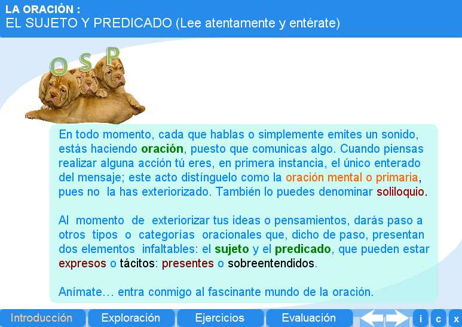
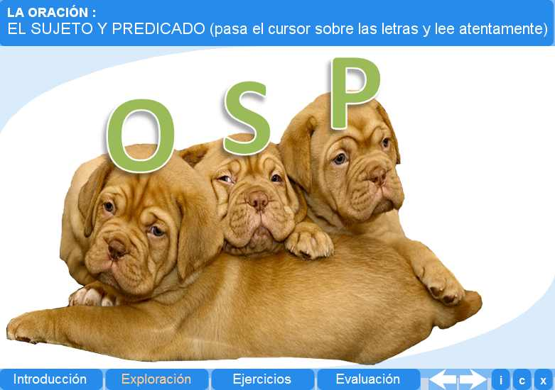
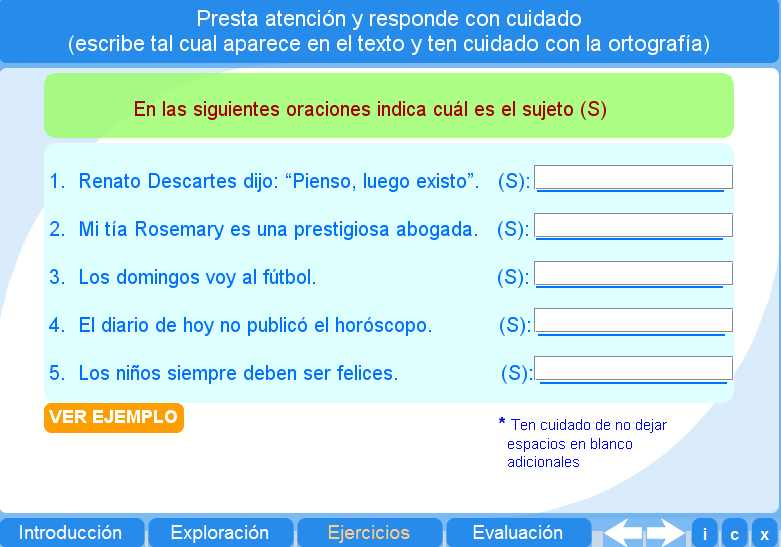
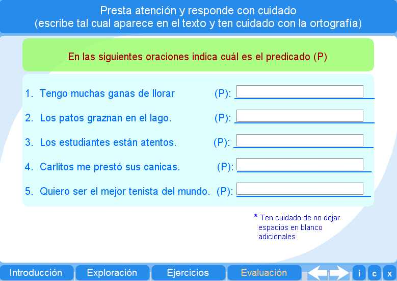

Objetivo
Ofrecer actividades que inviten al alumno a reconocer las partes elementales de una oreción.
Instrucciones generales
Se puede navegar entre los apartados con el menú de la parte inferior. Este menú aparece a lo largo de todo el interactivo y conserva su funcionalidad.
También se puede navegar por las escenas por medio de las flechas de navegación que aparecen en el lado inferior derecho del interactivo. Dentro de los apartados Exploración y Ejercicios es necesario utilizar estas flechas para acceder a las escenas sucesivas de dichos apartados.

En la parte inferior derecha del interactivo se encuentran los siguientes botones:
 |
Muestra la documentación del interactivo. |
 |
Despliega los créditos correspondientes a este interactivo. |
 |
Cierra el interactivo. |
Contenidos
Introducción
Ilustra sobre el sujeto y predicado.

Exploración
Ofrece al alumno definiciones de oración, sujeto y predicado.

Ejercicio
El alumno puede ejercitar lo aprendido identificando el sujeto en una oración.

Evaluación
El alumno debe resolver los ejercicios planteados.

| Los materiales aquí presentados utilizan el applet Descartes Web 2.0. | |
 |
Los contenidos de esta unidad didáctica están bajo una licencia de Creative Commons. |